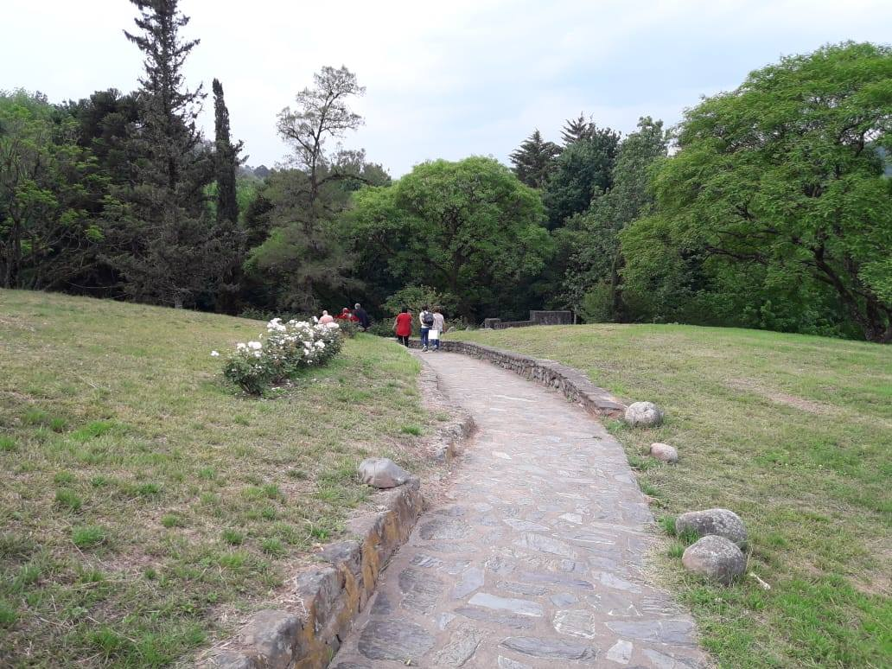
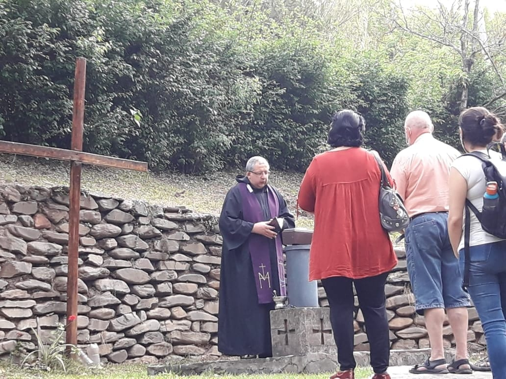
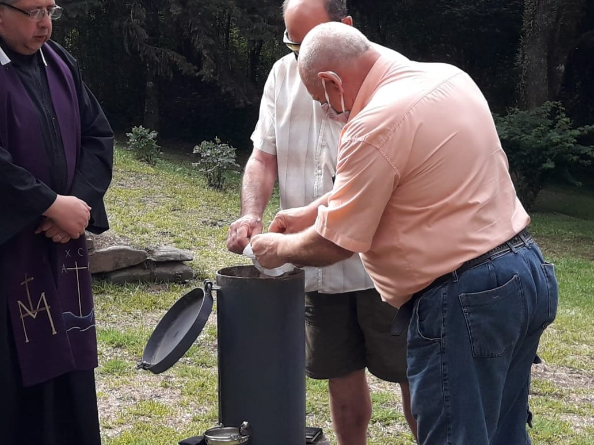
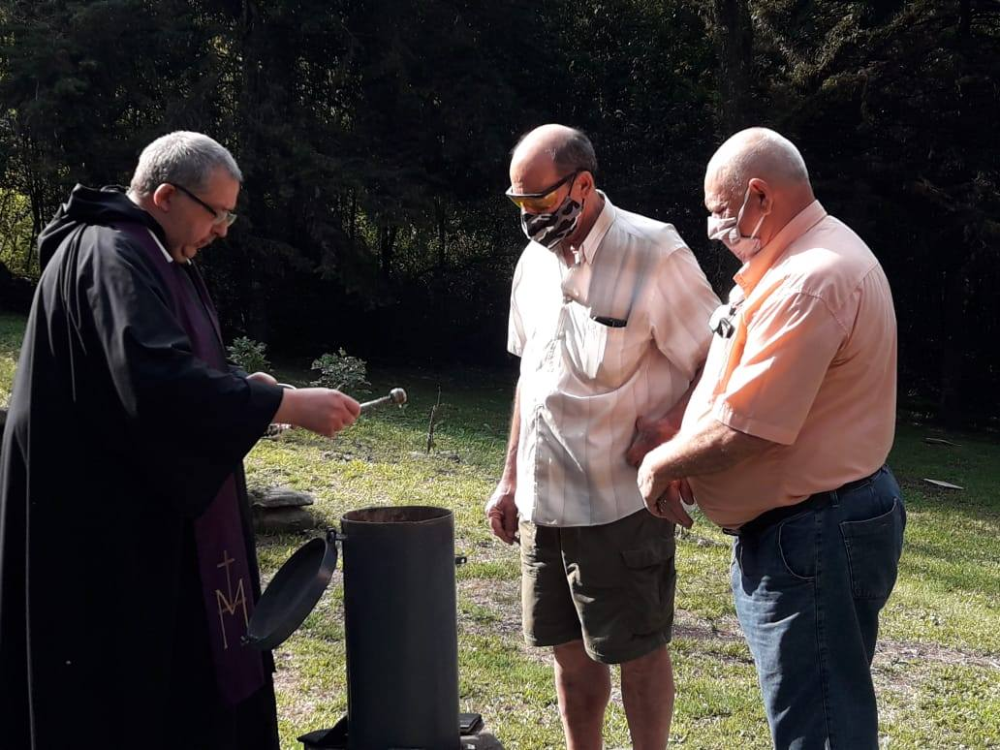
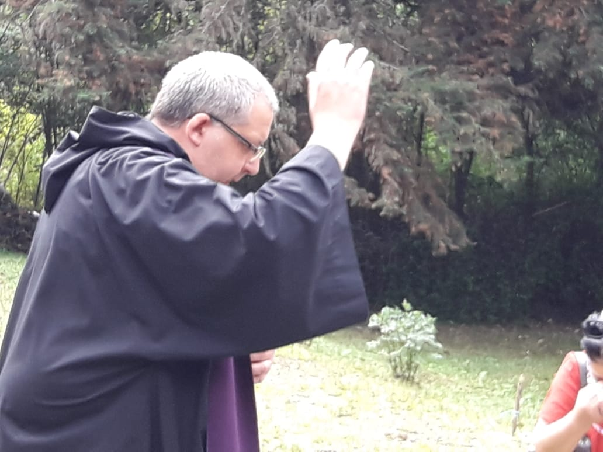

La comunidad monástica tiene a su disposición un cinerario común en su cementerio, donde se depositan las cenizas de los difuntos que previamente hayan sido cremadas.
Condiciones
- Las inhumaciones se realizan el primer domingo de cada mes a las 17:00 hs.
- Documentación: certificado de defunción y/o constancia de cremación.
- Colaboración: por única vez $40.000 o lo que pueda la familia.
- Turnos al 3815408148 (Padre Edmundo).




